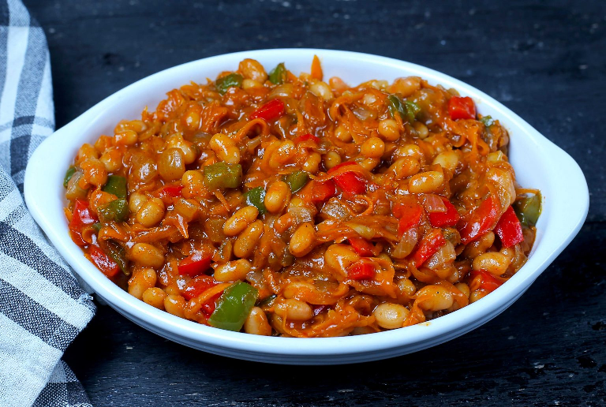

Odin recipes
Chakalaka recipe
Chakalaka dish

image credit:Howie Gourmet
Description
Chakalaka is a traditional South African vegetable relish, packed with flavor, spice, and vibrant colors. It’s a versatile dish often served as a side for Pap, Rice or Ledombolo.This recipe combines bell peppers, onions, beans, and aromatic spices to create a savory, slightly spicy dish that’s perfect for family meals or gatherings. Chakalaka can be made in large batches and tastes even better the next day as the flavors meld together.
Ingredients
- 2 tablespoons vegetable oil
- 1 large onion, chopped
- 1 red bell pepper, chopped
- 1 green bell pepper, chopped
- 2 cloves garlic, minced
- 2 cloves garlic, mince
- 1 teaspoon curry powder
- 1 teaspoon smoked paprika
- 1 can baked beans (400g)
- 2 tomatoes, chopped or 1 small can chopped tomatoes
- 1–2 fresh chilies, chopped (optional, for heat)
- Salt and pepper to taste
Steps
- Heat the vegetable oil in a large pan over medium heat.
- Add the chopped onions and sauté until translucent.
- Stir in the garlic, red and green bell peppers, and cook for 3–5 minutes until slightly softened
- Add the curry powder, smoked paprika, and chilies if using, and stir for 1–2 minutes to release the spices’ aroma.
- Mix in the chopped tomatoes and cook until they start breaking down into a sauce.
- Add the baked beans and stir to combine everything evenly.
- Simmer the mixture on low heat for 10–15 minutes, stirring occasionally.
- Season with salt and pepper to taste, then remove from heat.
- Serve hot as a side dish with bread, pap, or grilled meat.